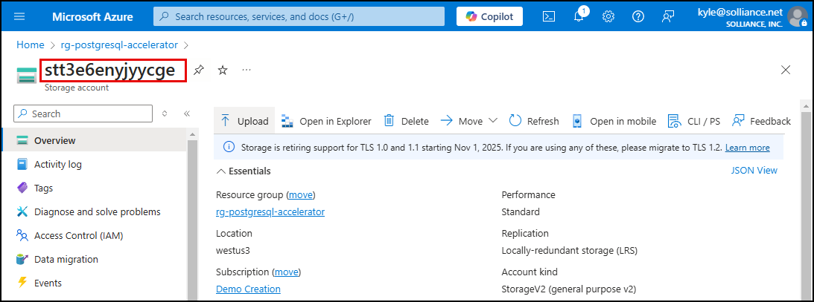
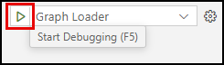
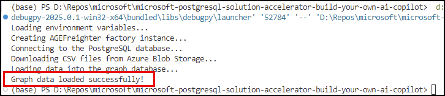

6.7 Create Graph Database¶
Hosting graph databases in Azure Database for PostgreSQL using the Apache AGE extension offers a powerful way to analyze relationships within your data. AGE combines graph and relational data seamlessly, leveraging the openCypher query language for efficient graph processing. This integration brings PostgreSQL's scalability, performance, and security to the table while enabling advanced data analysis and management. When incorporated into a copilot, this setup empowers you to evaluate vendor performance of SOW deliverables through invoice validation, ensuring your data-driven decisions are robust and insightful.
Create Graph Database with AGEFreighter¶
AGEFreighter is a Python library designed to simplify the process of creating and loading graph databases in Azure Database for PostgreSQL, allowing data to be ingested from various sources, including file formats (CSV, AVRO, and Parquet), Azure Storage, Azure Cosmos DB, and Azure Database for PostgreSQL.
Review code¶
The solution accelerator includes the graph_loader.py file in the src/api/app folder, which allows you to quickly run a Python script to create a graph database and populate it with data from CSV files.
The graph loader is implemented in the src/api/app/graph_loader.py file. Open it now in Visual Studio Code and explore the code in sections. You can also expand the section below to see the code inline and review explanations for the code.
Graph Loader code
| src/api/app/graph_loader.py | |
|---|---|
1 2 3 4 5 6 7 8 9 10 11 12 13 14 15 16 17 18 19 20 21 22 23 24 25 26 27 28 29 30 31 32 33 34 35 36 37 38 39 40 41 42 43 44 45 46 47 48 49 50 51 52 53 54 55 56 57 58 59 60 61 62 63 64 65 66 67 68 69 70 71 72 73 74 75 76 77 78 79 80 81 82 83 84 85 86 87 88 89 90 91 92 93 94 95 96 97 98 99 100 101 102 103 104 105 106 107 108 | |
-
Import libraries (lines 1-5): Required classes and functions are imported from various libraries.
-
Define
mainfunction (line 7): Themainfunction is the entry point of the graph loader. This function serves as the orchestrator for executing the code within the file. -
Load environment variables (lines 10-17): The
load_dotenv()method from thedotenvPython library allows variables from the.envfile within the API project to be loaded as environment variables in the project. Note the names of the variables here, as you will be adding those to your.envfile in the next step. -
Create an AGEFreighter factory (line 21): The entry point for the
agefreighterpackage in thefactoryclass. This method creates an instance of the library using the type specified. You are loading your graph using multiple CSV files, so theMultiCSVFreighterclass type is indicated. -
Connect to PostgreSQL (lines 25-28): The
connectmethod of thefactoryopens a connection to your Azure Database for PostgreSQL flexible server.- The
get_connection_string()function uses values from your environment variables to define the connection string thefactorywill use to connect to your database. - The
get_connection_string()function is defined on lines 55-66.
- The
-
Download CSV files from blob storage (line 34): The CSV files you created in the previous task are downloaded from blob storage and written into a local folder, where the graph loader can easily access them.
- The
download_csvs()function is defined on lines 68-81. This function creates aBlobServiceClientinstance, which is used to retrieve the blobs in your storage account'sgraphcontainer. - For each blob with the extension of
.csv, thedownload_csvfunction defined on lines 83-99 is used to retrieve the blob's contents and write them into a local file.
- The
-
Create and load the graph database (lines 38-51): The
loadmethod of thefactorydoes the following:- Creates a graph named
vendor_graph. - Defines vertex (node) data and labels and inserts the nodes into the graph.
- Specifies edges using labels and inserts them to establish the relationships between the nodes.
- Creates a graph named
-
Define the main guard (lines 101-108): The main guard defines how the
graph_loaderis executed when called directly. This code block lets you run the script from a command line or VS Code debugging session.
Update .env file¶
The graph_loader.py file references environment variables to retrieve information about your Azure Database for PostgreSQL flexible server instance, your Entra ID username, and the storage account from which to pull CSV files. Before executing the graph loader script, you must update your project's .env file with these values. The .env file can be found in the src\api\app folder of the repo.
-
In VS Code, navigate to the
src\api\appfolder in the Explorer panel. -
Open the
.envfile and add the following lines:1 2 3
ENTRA_ID_USERNAME="{YOUR_ENTRA_ID_USERNAME}" POSTGRESQL_SERVER_NAME="{YOUR_POSTGRESQL_SERVER_NAME}" STORAGE_ACCOUNT_NAME="{YOUR_STORAGE_ACCOUNT_NAME}"Follow these steps to retrieve the necessary values
-
Replace the
{YOUR_ENTRA_ID_USERNAME}token in theENTRA_ID_USERNAMEvariable's value with your Microsoft Entra ID, which should be the email address of the account you are using for this solution accelerator. -
Replace the
{YOUR_POSTGRESQL_SERVER_NAME}token with the name of your PostgreSQL server. To get your server name: -
Navigate to your Azure Database for PostgreSQL flexible server resource in the Azure portal.
-
In the Essentials panel of the PostgreSQL flexible server's Overview page, copy the Server name value and paste it into your
.envfile as thePOSTGRESQL_SERVER_NAMEvalue. -
Replace the
{YOUR_STORAGE_ACCOUNT_NAME}token with the name of your storage account. To retrieve your storage account name: -
In the Azure portal, navigate to the Storage account resource in your resource group.
-
On the Storage account page, copy the storage account name and paste it into your
.envfile as theSTORAGE_ACCOUNT_NAMEvalue.
-
-
Save the
.envfile.
Load the graph database¶
You will use a VS Code debugging session to locally execute the graph_loader.py script. Follow the steps below to start a Graph Loader debug session in VS Code.
-
In Visual Studio Code Run and Debug panel, select the Graph Loader option from the debug configurations dropdown list.
-
Select the Start Debugging button (or press F5 on your keyboard).

-
Wait for the graph loader to finish running, indicated by the
Graph data loaded successfully!message in the terminal output.
Verify data load¶
You will execute openCypher queries using pgAdmin to verify the data load and explore relationships in your graph database.
-
Return to pgAdmin and ensure it is connected to your PostgreSQL database.
-
In the pgAdmin Object Explorer, expand databases under your PostgreSQL server.
-
Right-click the contracts database and select Query Tool from the context menu.
-
Before you can run cypher queries, you must set the
ag_catalogschema in your path:SQL 1SET search_path = ag_catalog, "$user", public; -
Now, run the following cypher query to view vendors with open invoices, the details of those invoices, and verify your graph database was loaded correctly:
SQL 1 2 3 4 5
-- View vendors and SOWs, along with invoice details from edge properties SELECT * FROM ag_catalog.cypher('vendor_graph', $$ MATCH (v:vendor)-[rel:has_invoices]->(s:sow) RETURN v.id AS vendor_id, v.name AS vendor_name, s.id AS sow_id, s.number AS sow_number, rel.payment_status AS payment_status, rel.amount AS invoice_amount $$) as graph_query(vendor_id BIGINT, vendor_name TEXT, sow_id BIGINT, sow_number TEXT, payment_status TEXT, invoice_amount FLOAT);
Congratulations! You have successfully loaded your graph database with data from PostgreSQL.